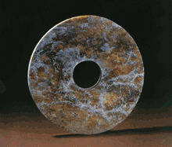

新闻公告
11月19日，杭州西湖风景名胜区管委会（市园林文物局）召开领导干部会议，传达学习贯彻党的十八大精神。西湖风景名胜区（市园文局）党委书记、管委会主任（局长）刘颖传达了十八大精神，并就名胜区（园文局）深入学习贯彻十八大精神作了部署，管委会副主任王宏伟、吕雄伟等党委班子成员、机关全体人员、各基层区（局）管干部参加会议。会议由党委副书记、副主任张鸿斌主持。
良渚文化
良渚文化是一支分布在太湖流域的古文化，距今5300-4000年。考古研究表明，在良渚农业已率先进入犁耕稻作时代；手工业趋于专业化，琢玉工业尤为发达；大型玉礼器的出现揭开了中国礼制社会的序幕；贵族大墓与平民小墓的分野显示出社会分化的加剧；刻划在出土器物上的“原始文字”被认为是中国成熟文字出的前奏。专家们指出：中国文明的曙光是从良渚升起的。 
良渚文化发展分为石器时期、玉器时期、陶器时期。玉器是良渚先民所创造的物质文化和精神文化的精髓。良渚文化玉器，达到了中国史前文化之高峰，其数量之众多、品种之丰富、雕琢之精湛，在同时期中国乃至环太平洋拥有玉传统的部族中，独占鳌头。而其深涵的历史文化底蕴，更给世人带来了无限的遐想。文字是文明社会的一个重要标志。在良渚文的一些陶器、玉器上已出现了为数不少的单个或成组具有表意功能的刻划符号，学者们称之为“原始文字”。
良渚文化时期，稻作生产已相当发达，从出土的大量三角形石犁等农具看，良渚人已摆脱一铲一锹的耜耕而率先迈入了连续耕作的犁耕阶段，从而为当时社会的繁荣奠定了雄厚的物质基础。良渚文化以黑陶著称，胎质细腻、造型规整，器种变化多样，用途分明，尤其是鼎、豆、壶的组合，构成了富有良渚文化特色的器物群。
良渚文化时期的城址发掘是中华文明探源工程的一项课题，它关系到国家的起源。良渚城
新石器时代良渚墙的发现让人更加确信中华文明至少诞生于距今5300年至4300年之前。良渚文化一向被誉为“文明的曙光”。在中国史前文明的各大遗址中，良渚遗址的规模最大，水平最高。考古人员2007年11月29日在杭州宣布，一座290多万平方米的5000年前的古城在良渚遗址的核心区域被发现。北京大学教授严文明等考古学家指出，这是长江中下游地区首次发现的良渚文化时期的城址，也是目前所发现的同时代中国最大的城址，可称为“中华第一城”。良渚古城的发现，改变了良渚文化文明曙光初露的原有认识，标志5000年前的良渚文化时期已经进入了成熟的史前文明发展阶段。分布于余杭境内的“良渚遗址群”，是良渚文化的中心。国家文物局指出：良渚遗址群将成为实证中华五千年文明史的圣地。
欢迎光临